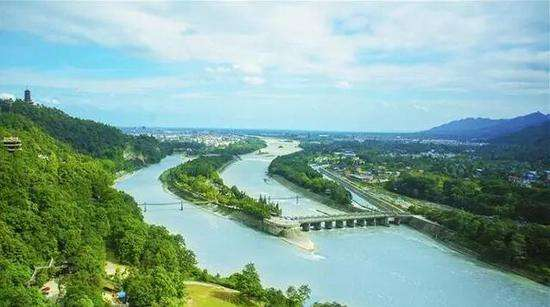

都江堰
世界文化遗产、国家5A级旅游景区
都江堰位于四川省成都市都江堰市(原灌县)城西，坐落在成都平原西部的岷江上距成都市区约50公里，距离青城山风景区20公里。

都江堰位于四川省成都市都江堰市城西，坐落在成都平原西部的岷江上，始建于秦昭王末年（约公元前256～前251） ，是蜀郡太守李冰父子在前人鳖灵开凿的基础上组织修建的大型水利工程，由分水鱼嘴、飞沙堰、宝瓶口等部分组成，两千多年来一直发挥着防洪灌溉的作用，使成都平原成为水旱从人、沃野千里的"天府之国"，至今灌区已达30余县市、面积近千万亩，是全世界迄今为止，年代最久、唯一留存、仍在一直使用、以无坝引水为特征的宏大水利工程，凝聚着中国古代劳动人民勤劳、勇敢、智慧的结晶。
都江堰风景区主要有伏龙观、二王庙、安澜索桥、玉垒关、离堆公园、玉垒山公园、玉女峰、灵岩寺、普照寺、翠月湖、都江堰水利工程等。
2018年8月13日，加拿大萨斯卡通召开的国际灌排委员会第69届国际执行理事会，执理会全体会议上公布了2018年(第五批)世界灌溉工程遗产名录。其中中国的都江堰等4个项目全部申报成功。